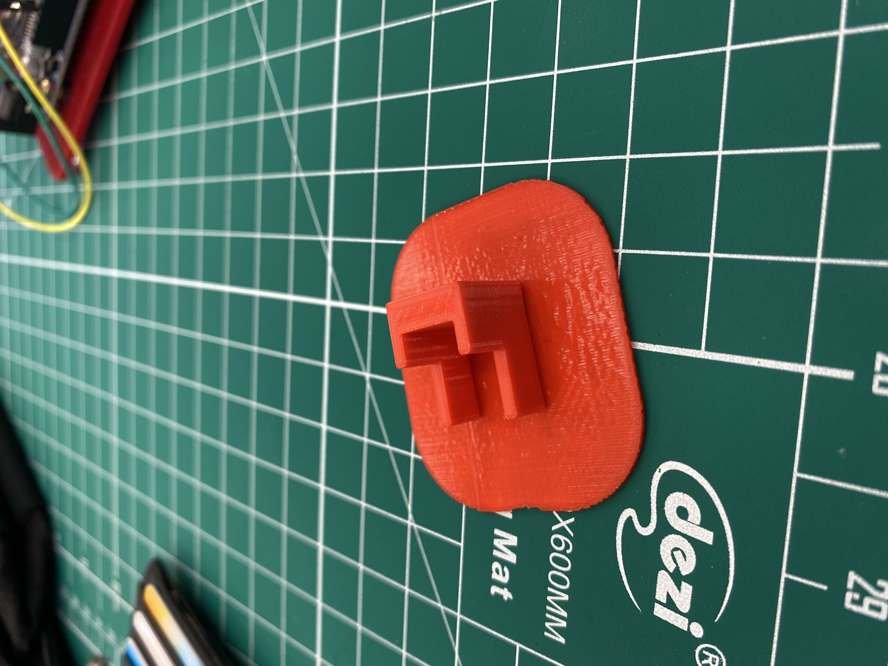

NeoPixel Table Lamp
My project is a table lamp. This lamp uses neopixel 8 led strip as the light source. I have used an pontentiometer to control the lamp. A potentiometer is a three-terminal resistor with a sliding or rotating contact that forms an adjustable voltage divider. This allow the user to to control the number of lights to turn ON or OFF. When the potentiometer is at minimum(start position) all leds will be at state '0' OFF. As more voltage enters the circuit, leds will light up accordingly
8 Neo pixel LED strip:

This idea was obatained from previous students project and my lecturer Mr ronald gave us challenge to create a table lamp for the FAB lab. My idea was to create an innovative lamp that consists of acrilyc lamp to be the frame of the table lamp and another neopixel strip to be the actual lamp for the table lamp.
Neopixel table lamp Prep list:
- Draw out initial project idea
- Prepare all components
- push button
- Pontentiometer
- Arduino Uno board
- Wires
- Resistors
- Neopixel LED strip
- Programming
- Design and Print all 3D and 2D printing
- Assemble all parts
Click the button to view Neopixel table lamp code:
Virtual demo of program on circuit:
Fusion 360 drawing of table lamp base:
The base of the table lamp wasn't completed has i have done a assignment on fusion 360. Box with lid, following the same method i was able to complete the base without any difficulty.
Neopixel holder:
The making of the holder:
End product:
This holder is to Keep the neopixel led strip in place to have direct contact with the acrilyc without any wastage of light. I designed this holder with fusion 360 and export the file to .stl and mash it.this allow me to preview the holder and sending to cura to print the product.
Acrilyc Design:
The acrilyc engraving design was inetresting to do as i was able to choose any potrait and sketch in fusion 360 with the function input canvas where i can outline the design i have selected. The only dufficulty was to consider the light flow as light travels in a straight line. In consideration on that i selected this design and connected lines for the light to travel through from the start to the end.
Laser cutting:
End product:
For the Acrilyc laser cutting there are a specific setting to follow as the the design that spreading the lights has to be engave and the rest has to cut through. As for engraving the color code assigned by the laser cutting machine is green and to cut through the color codes assigned is red.The power, speed and PPI are set accordingly.
Image of the setting:

My final product the table lamp after all Assembly:

A picture of the table lamp:

The table lamp Virtual demo:
I manage to do the project with the components and facilities provided by my lecturer and FAB lab. My whole project was to create table lamp, however due to time cntraint i was only able to do up to the acrilyc lamp(table lamp frame).I've completed 3/4 of my project such as the acrilyc, the table lamp base, Neopixel holder, all prep work and fusion 360 skechtes and finally my programming.They are all succesfully completed and workable.The only thing left was to design a lamp using PVC poles as the stands of the lamp and connecting up both the neopixel strips to fully complete my project.